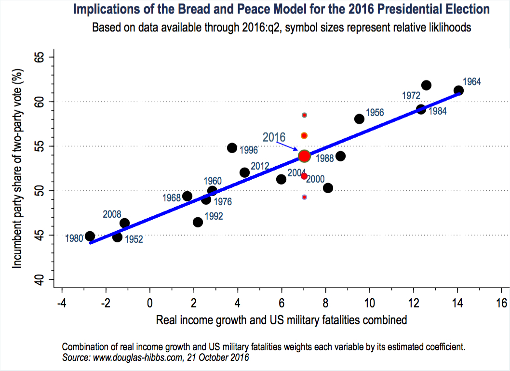

Ce qu’on a déjà appris

Open Data France et datactivi.st
Jour 5
Joël Gombin et Samuel Goëta (datactivi.st)
Retrouvez les matériaux sur : www.github.com/datactivist/IntroR_ODF
Pad collaboratif : https://frama.link/formationR_pad4

Modéliser, c’est mettre en relation une variable expliquée (dépendante / prédite) et une ou plusieurs variables explicatives (indépendantes / prédicteurs).
Y = f(X1, X2, X3, …, Xn)
L’estimation du modèle consiste à estimer la valeur des paramètres (ou coefficients).
Y = α + β1X1 + β2X2 + β3X3 + · · · + βnXn + ε
Exemple : on s’intéresse au vote FN à Marseille, par bureau de vote, lors des élections municipales de 2014, en fonction de la sociologie des bureaux de vote.
Vote FN = f(Composition socioprofessionnelle, population étrangère, taux de chômage, locataires HLM)
Hypothèses :
Les coefficients estiment l’effet d’une variable indépendante sur la variable dépendante toutes choses égales par ailleurs, c’est-à-dire en neutralisant l’effet des autres variables.
La qualité globale du modèle peut être quantifié au travers du R2 , qui représente la part de variance (de la variable dépendante) expliquée.
Pour les variables indépendantes catégoriques, on estime un coefficient par modalité, à l’exception de la première (baseline).
lmLa fonction lm permet d’estimer des linear models. Elle nécessite simplement le modèle, sous forme d’une formule, et un dataframe.
modele1 <- lm(y ~ x1 + x2, data = data)lm permet également d’estimer des modèles pondérés (argument weights) ou portant sur un sous-ensemble du jeu de données (argument subset).
modelr et broommodelr => permet de manipler des modèles avec le pipe
add_predictions (avec data_grid, gather_predictions et spread_predictions)add_residuals (avec gather_residuels et spread_residuals)broom permet de gérer de nombreux modèles à la fois